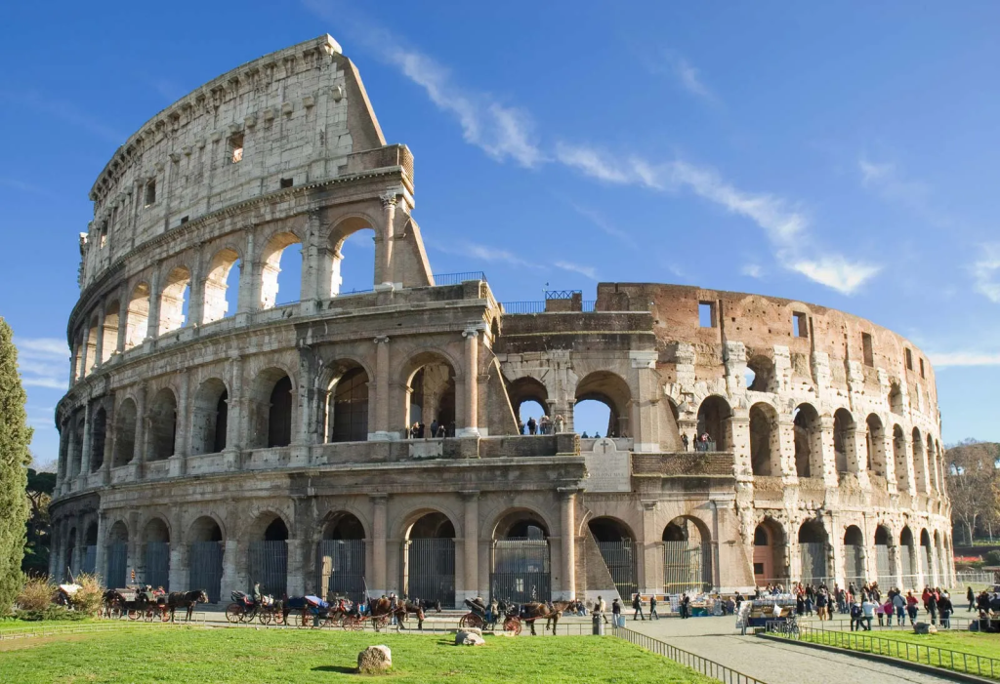
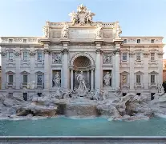
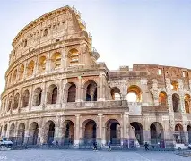
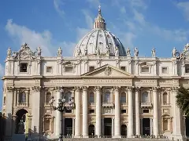

Rome is the capital city and most populated comune (municipality) of Italy. It is also the administrative centre of the Lazio region and of the Metropolitan City of Rome. A special comune named Roma Capitale with a population of 2.7 million in an area of 1,287.36 km2 (497.1 mi2), Rome is the third most populous city in the European Union by population within city limits. The Metropolitan City of Rome Capital, with a population of 4.2 million, is the most populous metropolitan city in Italy. Its metropolitan area is the third-most populous within Italy. Rome is located in the central-western portion of the Italian Peninsula, within Lazio (Latium), along the shores of the Tiber Valley. Vatican City (the smallest country in the world and headquarters of the worldwide Catholic Church under the governance of the Holy See)[6] is an independent country inside the city boundaries of Rome, the only existing example of a country within a city. Rome is often referred to as the "City of Seven Hills" due to its geography, and also as the "Eternal City". Rome is generally considered to be one of the cradles of Western civilization and Western Christian culture, and the centre of the Catholic Church.

The Trevi Fountain (Italian: Fontana di Trevi) is an 18th-century fountain in the Trevi district in Rome, Italy, designed by Italian architect Nicola Salvi and completed by Giuseppe Pannini in 1762. Standing 26.3 metres (86 ft) high and 49.15 metres (161.3 ft) wide, it is the largest Baroque fountain in the city and one of the most famous fountains in the world.

The Colosseum ultimately from Ancient Greek word "kolossos" meaning a large statue or giant) is an elliptical amphitheatre in the centre of the city of Rome, Italy, just east of the Roman Forum. It is the largest ancient amphitheatre ever built, and is the largest standing amphitheatre in the world. Construction began under the Emperor Vespasian (r. 69–79 AD) in 72 and was completed in AD 80 under his successor and heir, Titus (r. 79–81). Further modifications were made during the reign of Domitian (r. 81–96). The three emperors who were patrons of the work are known as the Flavian dynasty, and the amphitheatre was named the Flavian Amphitheatre (Latin: Amphitheatrum Flavium; Italian: Anfiteatro Flavio [aɱfiteˈaːtro ˈflaːvjo]) by later classicists and archaeologists for its association with their family name (Flavius).

The Papal Basilica of Saint Peter in the Vatican (Italian: Basilica Papale di San Pietro in Vaticano), or simply St. Peter's Basilica (Latin: Basilica Sancti Petri; Italian: Basilica di San Pietro [baˈziːlika di sam ˈpjɛːtro]), is a church of the Italian High Renaissance located in Vatican City, an independent microstate enclaved within the city of Rome, Italy. It was initially planned in the 15th century by Pope Nicholas V and then Pope Julius II to replace the ageing Old St. Peter's Basilica, which was built in the fourth century by Roman emperor Constantine the Great. Construction of the present basilica began on 18 April 1506 and was completed on 18 November 1626.